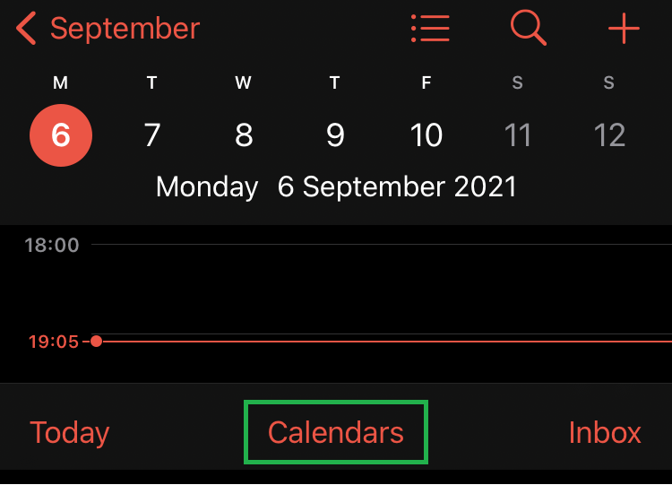
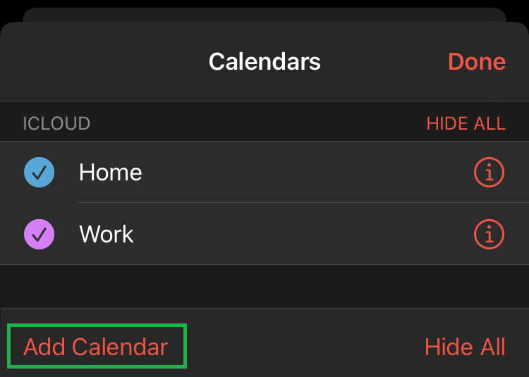
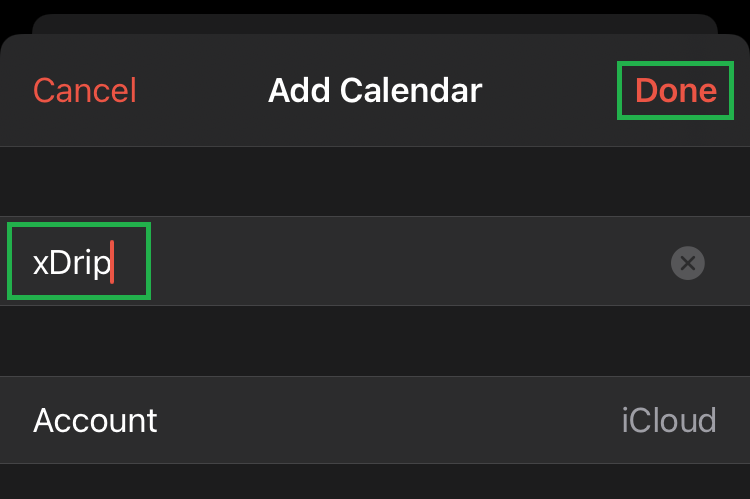
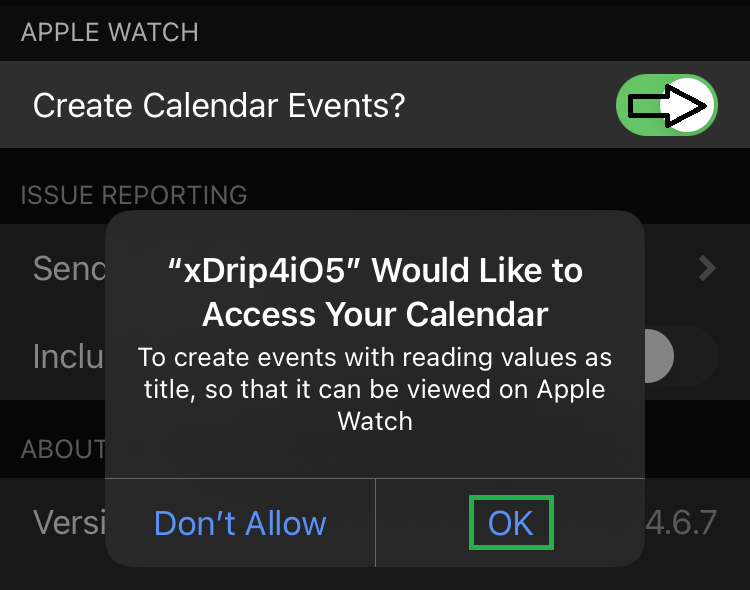
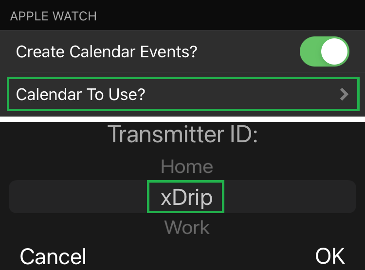
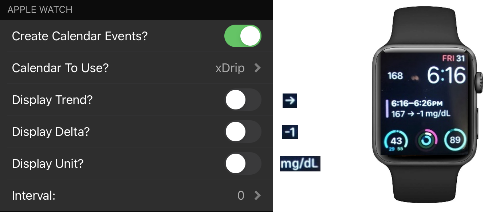
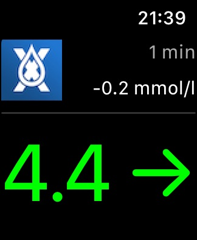

Connecting to an Apple Watch⌁
Calendar method⌁
Into your iPhone calendar create a new calendar and call it xDrip.



In xDrip4iOS settings create an event in calendar to allow sync’ing with your Apple Watch. Authorize xDrip.

Select the xDrip calendar.

You can then customize the indications.

Complication method⌁
Prerequisite: xDrip4iOS must be installed on your Watch.
This should be automatically done when you install xDrip4iOS on your phone.
If it doesn't:
- Go to the Apple Watch app on your phone
- In the “My Watch” tab to scroll all the way down to the “Available apps” section
- Tap “Install” next to xDrip4iOS
To add xDrip4iOS as a complication on a compatible watch face:
- Long press the watch face
- Tap “modify”
- Select the complication slot where you want to have it and scroll with the digital crown until xDrip4iOS is selected
- Press the crown to exit back to watchface

Alternatively, this can be done from the Watch app on the iPhone.
Adding it to the dock, depends on the mode. If you have the Dock set to “most recent” then it simply depends on when you last opened xDrip4iOS whether it will appear or not. If you want it there permanently and in front, you must set it to “Favourites” mode. And “favourites” are managed from the Apple Watch app on the iPhone, you can add xDrip4iOS as a favorite there to have it in dock permanently.